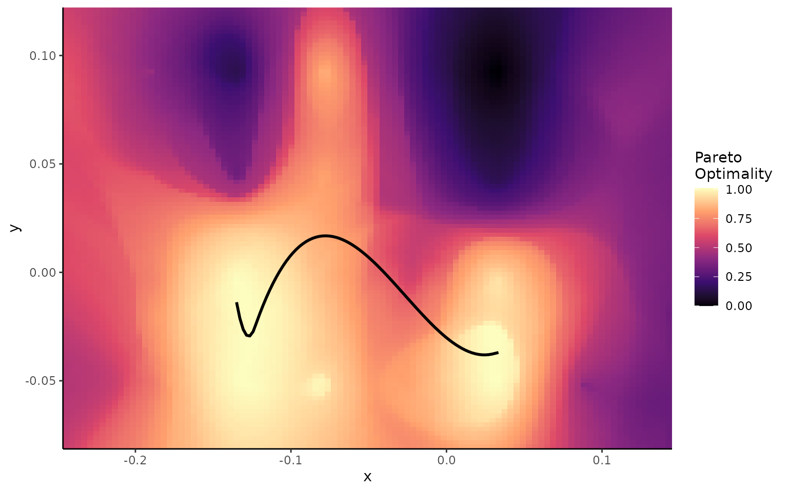
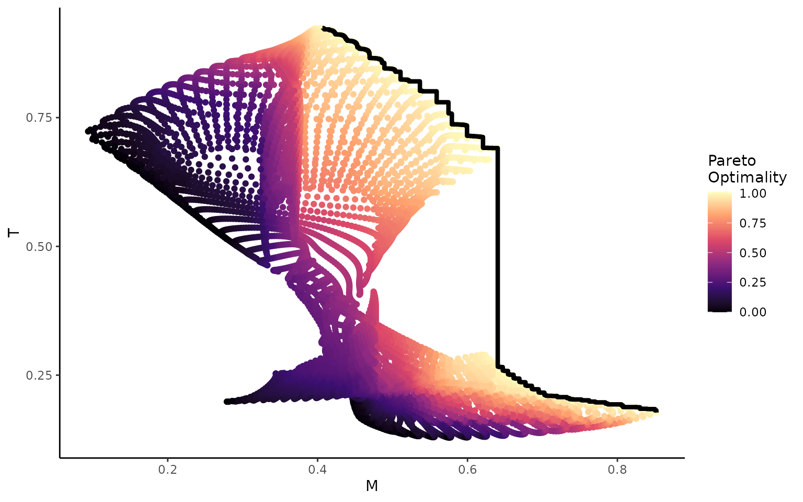
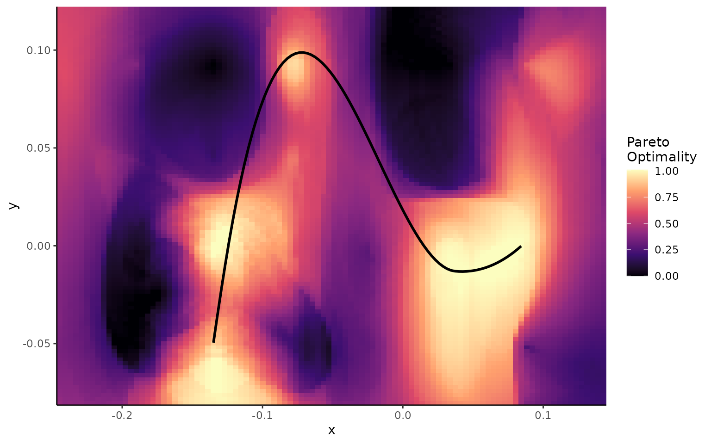

Pareto
Pareto.rmdThe following provides a guide on the workflow of performing adaptive landscape analysis using Pareto optimality.
If you haven’t already, please read the accompanying “Morphoscape” vignette for an introduction to adaptive landscapes more generally as well as some core functions of the package!
Considering Optimality
Functional Optimality
Morphospace was originally built to produce functional adaptive landscapes, marrying phenotypic data (morphospace) and performance data. This illustrates one way of thinking about optimality as it concerns adaptive landscapes: which traits, and in what combinations, are particular morphologies optimized for?
data("turtles")
data("warps")
str(turtles)
#> 'data.frame': 40 obs. of 4 variables:
#> $ x : num 0.03486 -0.07419 -0.07846 0.00972 -0.00997 ...
#> $ y : num -0.019928 -0.015796 -0.010289 -0.000904 -0.029465 ...
#> $ Group : chr "freshwater" "softshell" "softshell" "freshwater" ...
#> $ Ecology: chr "S" "S" "S" "S" ...
str(warps)
#> 'data.frame': 24 obs. of 6 variables:
#> $ x : num -0.189 -0.189 -0.189 -0.189 -0.134 ...
#> $ y : num -0.05161 -0.00363 0.04435 0.09233 -0.05161 ...
#> $ hydro: num -1839 -1962 -2089 -2371 -1754 ...
#> $ curve: num 8.07 6.3 9.7 15.44 10.21 ...
#> $ mech : num 0.185 0.193 0.191 0.161 0.171 ...
#> $ fea : num -0.15516 -0.06215 -0.00435 0.14399 0.28171 ...
# Make performance surfaces
warps_fnc <- as_fnc_df(warps, func.names = c("hydro", "curve", "mech", "fea"))
kr_surf <- krige_surf(warps_fnc, hull = NULL, new_data = turtles)
#> [using ordinary kriging]
#> [using ordinary kriging]
#> [using ordinary kriging]
#> [using ordinary kriging]
#> [using ordinary kriging]
#> [using ordinary kriging]
#> [using ordinary kriging]
#> [using ordinary kriging]
# Make functional adaptive landscapes
weights <- generate_weights(n = 20, data = kr_surf)
#> 1771 rows generated
all_landscapes <- calc_all_lscps(kr_surf, grid_weights = weights)
wprime_by_Group <- calcWprimeBy(all_landscapes, by = ~Ecology,method = "quantile")Pareto Optimality
An alternative way of thinking about optimality comes from Pareto optimality. A structure might have to compromise between different functions due to inherent trade-offs. See the differences in the performance surfaces for two traits from the turtle dataset.
# Make performance surfaces for individual traits
plot_ggsurf(kr_surf,'hydro')
plot_ggsurf(kr_surf,'curve')We see a trade-off exists between curvature and hydrodynamic performance, where you cannot simultaeneously maximize both traits.
While trade-offs inevitably exist, some morphologies handle them better than others. For example, you might not be able to maximize two trait ssimultaeneously, but you can still maximize one trait for a given value of the second trait; morphologies that meet this criterion are referred to as ‘Pareto optimal’.
If we plot hydrodynamic performance vs curvature for each point in morphospace, the ‘Pareto optimal’ points fall along the top left edge of the plot.
# Compute Pareto landscape for two traits
KrSurfParOpt <- calc_lscp_Pareto(kr_surf,'hydro','curve')
# Plot trade-offs between the traits
plot_ggtrade(KrSurfParOpt)If we project these points back in morphospace now, the Pareto optimal points should form the ‘Pareto front’; the optimal pathway through morphospace from one trait optimum to another. Here, the trade-off between the two traits has the least impact on overall performance.
# Plot the Pareto landscape
plot_ggPareto(KrSurfParOpt)
#> `geom_smooth()` using method = 'loess' and formula = 'y ~ x'Pareto optimality is generally defined in terms of trade-offs between traits, hence why the example above used performance surfaces as the input.
However, we can extend the same methods to a more abstract case, and examine trade-offs between performance on different adaptive landscapes, as shown below.
#########
# Plot individual group landscapes
plot_ggsurf(wprime_by_Group,'M')
plot_ggsurf(wprime_by_Group,'S')
# Calculate Pareto landscape based on functional landscapes
Lscp_Pareto_MS <- calc_lscp_Pareto(wprime_by_Group,'M','S')
summary(Lscp_Pareto_MS)
#> Length Class Mode
#> grid 5 data.frame list
#> names 2 -none- character
# Plot trade-offs between landscape heights
plot_ggtrade(wprime_by_Group,'M','S')
# Plot Pareto landscape between landscape heights
plot_ggPareto(wprime_by_Group,'M','S')
#> `geom_smooth()` using method = 'loess' and formula = 'y ~ x'
We can even do all of that with just one function!
plot_lscp_Pareto(wprime_by_Group,'M','S')
#> [[1]]
#>
#> [[2]]
#> `geom_smooth()` using method = 'loess' and formula = 'y ~ x'
It should be noted that there may be times where the shape of the performance surfaces or adaptive landscapes are such that a smooth transition between optima is not possible. The example below demonstrates this for two other adaptive landscapes from the turtle dataset: marine and terrestrial.
plot_lscp_Pareto(wprime_by_Group,'M','T')
#> [[1]]
#>
#> [[2]]
#> `geom_smooth()` using method = 'loess' and formula = 'y ~ x'
References
Dickson, B. V., & Pierce, S. E. (2019). Functional performance of turtle humerus shape across an ecological adaptive landscape. Evolution, 73(6), 1265-1277.
Deakin, W.J., Anderson, P.S., den Boer, W., Smith, T.J., Hill, J.J., Rücklin, M., Donoghue, P.C. & Rayfield, E.J. (2022). Increasing morphological disparity and decreasing optimality for jaw speed and strength during the radiation of jawed vertebrates. Science Advances 8, eabl3644.
Roocks, P. (2016). Computing Pareto frontiers and database preferences with the rPref package.